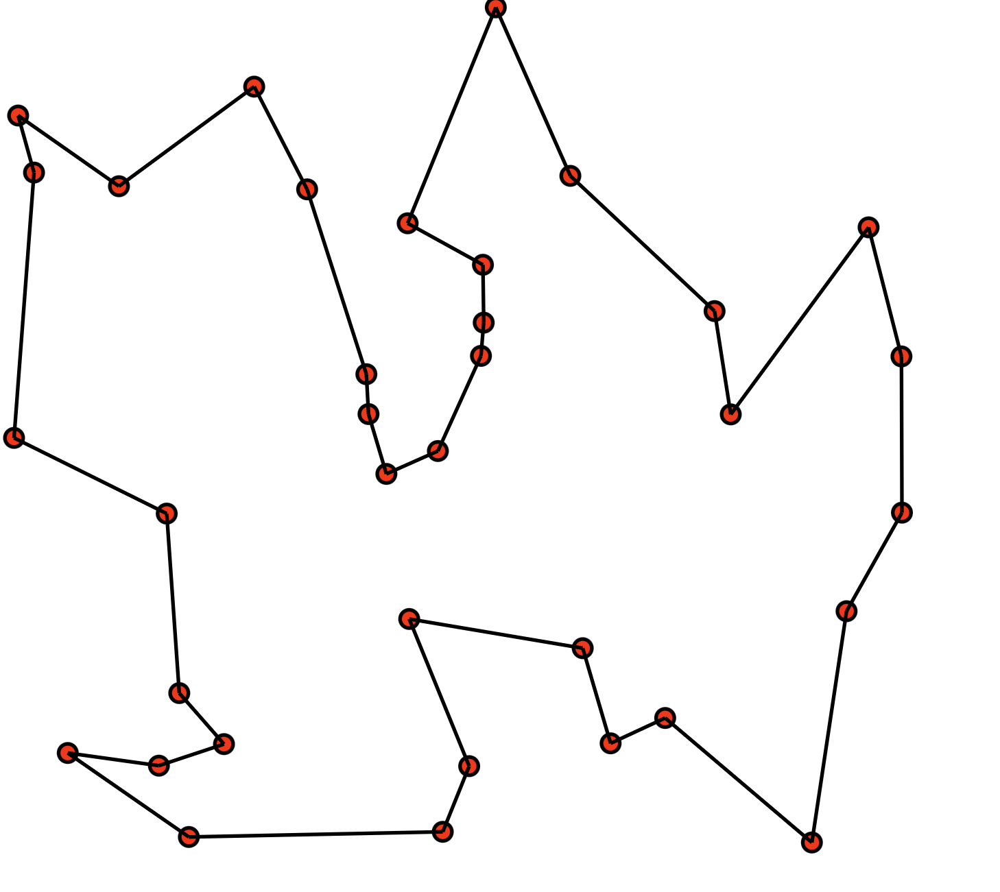
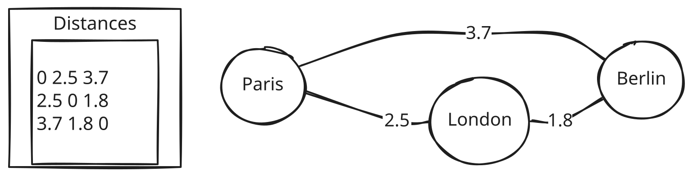
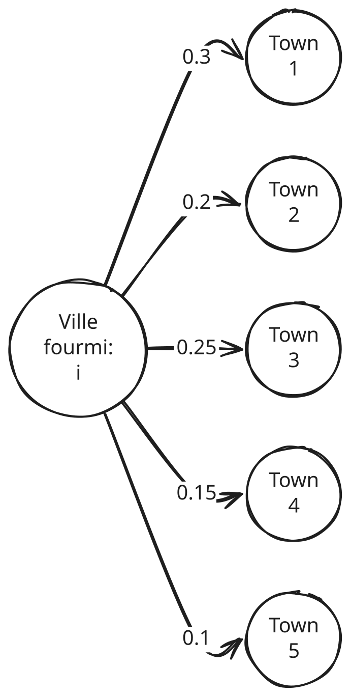
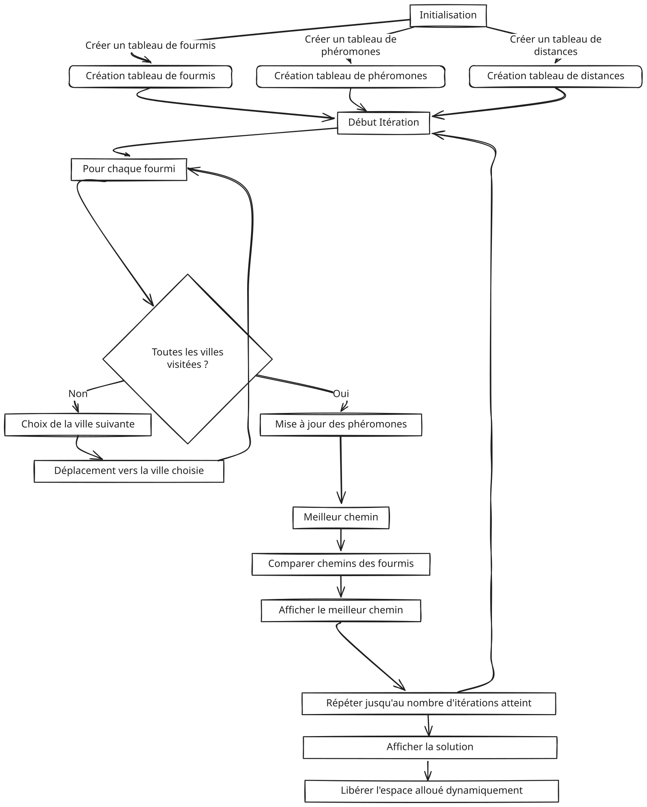

TP3 - Optimisation en colonnes de fourmis
Table des matières
Dans ce TP, nous allons nous allons nous intéresser au problème nommé le Travelling Salesman problem qui est un problème classique en optimisation combinatoire et en recherche opérationnelle. Il consiste à trouver le plus court chemin qui passe une et une seule fois par chaque ville d'un ensemble de villes et qui revient à la ville de départ. Nous allons voir comment résoudre ce problème en utilisant un algorithme de recherche locale appelé optimisation en colonie de fourmis.
Description du problème

On veut partir d'une liste de villes dont on connait les coordonées en latitude et longitude, obtenir un chemin qui passe une seule fois par chaque ville et qui revient à la ville de départ. On cherche à minimiser la distance totale parcourue.
Données du problème
On part d'un fichier contenant les informations sur les villes (une ville par ligne) avec le format: Nomville latitude longitude. Par exemple:
New-York 40.7128 -74.0060
London 51.5074 -0.1278
Tokyo 35.6895 139.6917
...On donne à cet effet plusieurs fichiers de tests :
Objectif
A partir de la lecture d'un de ces fichiers, on veut mettre en mémoire les informations pour toutes les villes avec une représentation adaptée en C. Dans un deuxième temps on veut sortir une liste de ville à visiter et la distandce parcourue. La liste de ville doit idéalement avoir la plus petite distance possible.
Par exemple, sur le fichier example_small.txt, on doit obtenir un résultat comme :
Best path: 1603.443118
New-York -> London -> Berlin -> Paris -> Tokyo -> Sydney -> Cape-TownPartie I - Structure de données
Dans cette première partie, nous allons concevoir une représentation des données adaptée pour résoudre le problème du voyageur de commerce. Il est important de bien réfléchir aux structures que nous allons utiliser, car cela facilitera grandement l'implémentation de l'algorithme de résolution dans la suite du TP.
Étape 1 : Schéma à dessiner
Avant de commencer à coder, il est vivement recommandé de réaliser un schéma pour bien comprendre la structure des données que nous allons manipuler. Ce schéma doit représenter trois éléments clés :
- La structure
City: un bloc qui contient le nom de la ville, la latitude et la longitude. - Une liste chaînée : une série de blocs représentant des villes, reliés entre eux par des flèches bidirectionnelles pour indiquer les liens entre les villes (avec des pointeurs "précédent" et "suivant").
- Un tableau de pointeurs : un tableau avec des cases, chacune contenant un pointeur vers un élément (un nœud) de la liste chaînée, représentant ainsi l'ordre dans lequel les villes sont visitées.
Ce schéma vous aidera à visualiser la structure des données avant de commencer l'implémentation en C. Il est crucial de comprendre les relations entre ces éléments pour garantir une bonne organisation et une bonne gestion des villes dans le programme.
Étape 2 : Définir la structure City
Pour chaque ville, nous avons besoin de stocker trois informations essentielles : son nom, sa latitude et sa longitude. Ces données sont indispensables, car elles nous permettent d'identifier la ville et, surtout, de calculer les distances entre elles, ce qui est la base du problème à résoudre.
Stocker le nom nous permet de savoir de quelle ville il s'agit, tandis que les coordonnées géographiques, sous forme de latitude et longitude, sont nécessaires pour les calculs de distances. Ces trois champs (nom, latitude, longitude) composent donc une structure complète et adaptée pour représenter une ville dans notre programme.
Réaliser une implémentation de cette structure et réaliser des programmes qui la testent
Étape 3 : Représenter la liste des villes
Une fois les villes définies, il nous faut une structure pour les stocker et les parcourir facilement. Une liste doublement chaînée est un choix judicieux, car elle permet d'accéder à la fois à l'élément précédent et à l'élément suivant. Cela nous offre plus de flexibilité que les tableaux classiques, notamment lors des insertions ou suppressions.
Chaque nœud de cette liste chaînée contiendra une ville, représentée par un pointeur vers une structure City. Ainsi, nous aurons une liste complète de toutes les villes à visiter, reliées entre elles par des liens "avant" et "arrière".
Réaliser une implémentation de liste doublement chainée et tester là avec un ou des programmes judicieux
Étape 4 : Représenter un chemin
Le but du problème est de trouver un chemin qui passe par toutes les villes une seule fois. Ce chemin sera représenté par un tableau de pointeurs vers les nœuds de la liste chaînée, chaque pointeur correspondant à une ville dans l'ordre où elle doit être visitée.
L'utilisation d'un tableau de pointeurs permet un accès rapide aux villes dans l'ordre du chemin sans dupliquer les informations. Cela facilite également les manipulations, tout en restant efficace en mémoire et en exécution. Il est important de bien comprendre comment ce tableau est lié à la liste chaînée et comment il est utilisé pour représenter le chemin parcouru par le voyageur de commerce.
Réaliser une implémentation de cette structure et tester là avec un ou des programmes judicieux
Partie II - Lecture de fichiers
Dans cette partie, nous allons lire un fichier contenant les informations des villes et les stocker dans une liste chaînée. Chaque ligne du fichier contient le nom d'une ville, sa latitude et sa longitude. Nous utiliserons un pointeur de fichier FILE* et la fonction fscanf pour extraire ces informations.
Étape 1 : Lecture d'un fichier ligne par ligne
Le fichier contenant les informations des villes doit être ouvert en mode lecture. Pour cela, nous utiliserons un pointeur FILE*. La fonction fscanf nous permet de lire les données de chaque ligne (le nom, la latitude et la longitude) et de les stocker dans une structure City.
Le processus consiste à lire le fichier ligne par ligne jusqu'à atteindre la fin du fichier. À chaque lecture, on récupère les informations de la ville et on les stocke dans une structure de type City.
Assurez-vous de bien vérifier que le fichier est ouvert correctement avant de commencer la lecture. Si le fichier ne peut pas être ouvert, le programme doit afficher un message d'erreur.
On pourra s'inspirer de ce tutorial pour la lecture de fichier en C.
Étape 2 : Création d'une liste de villes
Une fois les informations d'une ville lues à partir du fichier, nous devons les stocker dans une liste chaînée. Cette liste chaînée contiendra toutes les villes du fichier dans l'ordre où elles sont lues.
Chaque fois que nous lisons une nouvelle ligne du fichier, nous devons créer un nouveau nœud pour la ville correspondante, puis l'ajouter à la fin de la liste chaînée. Comme la liste est doublement chaînée, il est important de bien mettre à jour les pointeurs "précédent" et "suivant" pour chaque nouveau nœud ajouté.
Étape 3 : Affichage de la liste des villes
Après avoir créé la liste chaînée contenant toutes les villes, nous devons vérifier que les informations sont bien stockées. Pour cela, nous allons écrire une fonction qui permet d'afficher toutes les villes de la liste.
La fonction doit parcourir la liste du premier au dernier élément et afficher, pour chaque ville, son nom, sa latitude et sa longitude. C'est un bon moyen de s'assurer que la liste est correctement remplie à partir des données du fichier.
L'affichage doit être clair, par exemple :
Ville : New-York, Latitude : 40.7128, Longitude : -74.0060
Ville : London, Latitude : 51.5074, Longitude : -0.1278
Ville : Tokyo, Latitude : 35.6895, Longitude : 139.6917
...Cette étape vous permettra de visualiser toutes les villes enregistrées dans la liste et d'éventuellement corriger les erreurs de lecture si nécessaire.
Partie III - Implémentation de la colonne de fourmis
On s'intéresse ici une fois les données sur les villes mises en places, à implémenter une solution pour résoudre le problème du voyageur de commerce en utilisant l'algorithme de colonie de fourmis. L'idée est de simuler le comportement des fourmis qui cherchent le chemin le plus court pour visiter toutes les villes.
Pour la suite, on répartiera les fonctions demandées dans plusieurs fichiers selon votre convenance. On n'oublirea pas également de tester toutes vos fonctions en faisant des fichiers de tests comme au TP précédent
1. La représentation d'une fourmi
Considérons la notion de fourmie virtuelle qui est une contrepartie de la fourmie réelle. Chaque fourmie virtuelle est associée à une ville de départ et parcourt les villes restantes en choisissant le chemin le plus court à chaque étape.
Une fourmi virutelle a les propriétés suivantes :
- Colonie d’individus coopérants. Comme pour les fourmis réelles, une colonie virtuelle est un ensemble d’entités non-synchronisés, qui se rassemblent ensemble pour trouver une "bonne" so- lution au problème considéré. Chaque groupe d’individus doit pouvoir trouver une solution même si elle est mauvaise.
- Pistes de phéromones. Ces entités communiquent par le mécanisme des pistes de phéro- mone. Cette forme de communication joue un grand rôle dans le comportement des fourmis : son rôle principal est de changer la manière dont l’environnement est perçu par les fourmis, en fonction de l’historique laissé par ces phéromones
- Évaporation des phéromones. Les pistes de phéromones s’évaporent avec le temps. Ce permet d’oublier lentement ce qui s’est passé avant. C’est ainsi qu’elle peut diriger sa recherche vers de nouvelles directions, sans être trop contrainte par ses anciennes décisions
- Recherche du plus petit chemin. Les fourmis réelles et virtuelles partagent un but com- mun : recherche du plus court chemin reliant un point de départ (le nid) à des sites de destination (la nourriture).
- Deplacement locaux. Les vraies fourmis ne sautent pas des cases, tout comme les fourmis virtuelles. Elles se contentent de se déplacer entre sites adjacents du terrain.
- Choix aléatoire lors des transitions. Lorsqu’elles sont sur un site, les fourmis réelles et virtuelles doivent décider sur quel site adjacent se déplacer. Cette prise de décision se fait au hasard et dépend de l’information locale déposée sur le site courant. Elle doit tenir compte des pistes de phéromones, mais aussi du contexte de départ (ce qui revient à prendre en considération les données du problème d’optimisation combinatoire pour une fourmi virtuelle).
Nous allons essayer de mettre en place un certain nombre de ces comportements en langage C pour le parcours d'une ville a une autre. Il est conseillé de faire un schéma sur papier des structures de données et leur relations avant de réaliser le code pour les tâches suivantes :
Tâche 1: Réaliser une implémentation d'une structure de donnée struct fourmi_s permettant de représenter une fourmi avec les propriétés suivantes :
- Une ville de départ : la ville où la fourmi commence son parcours.
- Un chemin parcouru : la liste des villes visitées dans l'ordre.
- Une distance parcourue : la somme des distances entre les villes visitées.
- Une liste des villes restantes : les villes qui n'ont pas encore été visitées.
Créer alors le type fourmi pour ne pas avoir à écrire struct fourmi_s à chaque fois.
Tâche 2 : Réaliser une fonction fourmi* creer_fourmi() permettant de créer une fourmie virtuelle dont la ville de départ est choisi aléatoirement. Pour cela, on pourra s'aider par exemple de cette page pour générer des nombres aléatoires en C. La fonction renverra un pointeur vers la structure de données qui contient les informations de la fourmi. Le chemin parcouru sera vide au début mais déjà alloué, la liste de villes restantes correspondera à une liste chainée contenant toutes les villes sauf la ville de départ.
Tâche 3 : Faire une fonction void free_fourmi(fourmi* f) permettant de libérer tout l'espace alloué pour la fourmi : le chemin parcouru, la liste des villes restantes et la fourmi elle même.
Tâche 4 : Créer une fonction fourmi** creer_tab_fourmis(int nombre) permettant de créer un tableau de fourmis (exactement un tableaux de pointeurs vers des fourmis) de taille nombre. Chaque fourmi du tableau doit être créée avec la fonction creer_fourmi. La fonction renverra un pointeur vers le tableau de fourmis Créer également sa contrepartie void free_tab_fourmis(fourmi** tab, int nombre) pour libérer tout l'espace alloué pour le tableau de fourmis.
2. Représentation des distances
Afin de pouvoir choisir une ville attractive pour la prochaine destination d'une fourmi donnée, il est nécéssaire de connaitre les distances entre villes. Pour cela, on peut utiliser la formule de Haversine qui permet de calculer la distance entre deux points géographiques (latitude et longitude) :
$$d = 2r \arcsin\left(\sqrt{\sin^2\left(\frac{\Delta\text{lat}}{2}\right) + \cos(\text{lat}_1)\cos(\text{lat}_2)\sin^2\left(\frac{\Delta\text{long}}{2}\right)}\right)$$
qui peut être implémentée en C comme suit :
#include <stdio.h>
#include <math.h>
#include <stdlib.h>
#define R 6371
#define TO_RAD (3.1415926536 / 180)
double dist(double th1, double ph1, double th2, double ph2)
{
double dx, dy, dz;
ph1 -= ph2;
ph1 *= TO_RAD, th1 *= TO_RAD, th2 *= TO_RAD;
dz = sin(th1) - sin(th2);
dx = cos(ph1) * cos(th1) - cos(th2);
dy = sin(ph1) * cos(th1);
return asin(sqrt(dx * dx + dy * dy + dz * dz) / 2) * 2 * R;
}
int main()
{
double d = dist(36.12, -86.67, 33.94, -118.4);
/* Americans don't know kilometers */
printf("dist: %.1f km (%.1f mi.)\n", d, d / 1.609344);
return 0;
}
Tâche 1 : Implémenter une fonction double distance_villes(City* a, City* b) permettant de calculer la distance entre deux villes a et b en utilisant la formule de Haversine. La fonction renverra la distance en kilomètres.
Tâche 2 : Créer une fonction double** creer_tab_distances(List_cities *villes) permettant de créer un tableau de distances entre les villes. Le tableau sera de taille nombre x nombre et contiendra les distances entre chaque paire de villes. La fonction renverra un pointeur vers le tableau de distances. On supposera que chaque ligne, colonne correspondant à la position des villes dans l'ordre de la lecture du fichier. Créer également une fonction void free_tab_distances(double** tab, int nombre) pour libérer tout l'espace alloué pour le tableau de distances.

Tâche 3 :Faire une fonction void deplacer_fourmi(fourmi* f, City* ville) permettant de déplacer une fourmi vers une ville donnée. La fonction devra mettre à jour la distance parcourue, le chemin parcouru et la liste des villes restantes. On vérifiera que la ville ne fait pas partie des villes déjà visités (dans ce cas on né déplace par la foumi).
3. Représentation des phéromones
Les phéromones sont des substances chimiques que les fourmis réelles déposent sur le sol pour communiquer entre elles. Dans notre cas, les phéromones sont des informations partagées entre les fourmis virtuelles pour indiquer les chemins les plus courts. Dans notre modèle, il s'agit une valeur flottante pour chaque paire de villes, représentant l'intensité des phéromones entre ces villes.
Tâche 1 : Créer une fonction double **creer_tab_pheromones(int nombre) permettant de créer un tableau de phéromones entre les villes. Le tableau sera de taille nombre x nombre et initialisé à zéro. La fonction renverra un pointeur vers le tableau de phéromones. On suppose que chaque ligne, colonne correspondant à la position des villes dans l'ordre de la lecture du fichier. Créer également une fonction void free_tab_pheromones(double** tab, int nombre) pour libérer tout l'espace alloué pour le tableau de phéromones.
Tâche 2 : Afin de pouvoir mettre à jour les phéromones lors du passage des fourmis de ville en ville, on utilise la formule suivante :
$$\tau_{ij} = (1 - \rho) \times \tau_{ij} + \sum_{k} \Delta\tau_{ij}^k$$
où :
- \(\tau_{ij}\) est la quantité de phéromones entre les villes i et j,
- \(\rho\) est le taux d'évaporation des phéromones (entre 0 et 1),
- \(\Delta\tau_{ij}^k\) est la quantité de phéromones déposée par la fourmi k entre les villes i et j. Dans notre modèle, on utilisera la formule suivante: $$ \Delta\tau_{ij}^k = \left\{\begin{array}{ll} \frac{Q}{L_k} & \text{si la fourmi k est passée par la ville i et j,} \\ 0 & \text{sinon.} \end{array}\right.$$ où \(Q\) est une constante positive et \(L_k\) est la distance parcourue par la fourmi k.
En supposant que toutes les fourmis de notre tableau de fourmis ont fini leur trajet, écrire une fonction void mise_a_jour_pheromones(double** pheromones, fourmi** fourmis, int nombre, double rho, double Q, list_c liste_villes), où list_c est la liste des villes, permettant de mettre à jour les phéromones entre les villes en utilisant la formule ci-dessus. La fonction prendra en paramètre le tableau de phéromones, le tableau de fourmis, le nombre de fourmis et le taux d'évaporation \(\rho\) et la constante \(Q\).
4. Transition entre les villes
Ue fois que nous avons notre tableau de distances et de phéromones, il est possible de considérer le choix aléatoire d'une ville par une fourmi en prenant en compte la distance et la quantité de phéromones.
Supposons qu'une fourmi fourmi* f se situe à une ville \(i\) et que la liste des villes disponibles est stockée dans f->villes_restantes. On peut alors définir la probabilité de choisir la ville \(j\) en utilisant la formule suivante :
$$p_{ij} = \frac{\tau_{ij}^\alpha \times \eta_{ij}^\beta}{\sum_{k \in f->villes_restantes} \tau_{ik}^\alpha \times \eta_{ik}^\beta}$$
où :
- \(\tau_{ij}\) est la quantité de phéromones entre les villes i et j,
- \(\eta_{ij} = \frac{1}{d_{ij}}\) est l'heuristique entre les villes i et j (avec \(d_{ij}\) la distance entre les villes i et j),
- \(\alpha\) et \(\beta\) sont des paramètres qui contrôlent l'importance relative des phéromones et de l'heuristique,
- le dénominateur est la somme des probabilités pour toutes les villes restantes.

Tâche 1 : Écrire une fonction double *calcul_proba(double** pheromones, double** distances, fourmi* f, list_c liste_villes, double alpha, double beta) permettant de calculer les probabilités de transition entre les villes pour une fourmi donnée. La fonction renverra un tableau de probabilités de taille égale à la liste des villes restantes de la fourmi.
Tâche 2 : Écrire une fonction City* choisir_ville(double* proba, list_c liste_villes) permettant de choisir une ville parmi les villes restantes en utilisant les probabilités de transition. Pour ce faire, on pourra utiliser une méthode de roulette pour choisir la ville en fonction des probabilités. On pourra utiliser l'implémentation sur cette page pour la roulette.
5. Algorithme de colonie de fourmis
Une fois que nous avons toutes les fonctions nécessaires pour représenter les fourmis, les distances, les phéromones et les transitions, nous pouvons écrire l'algorithme de colonie de fourmis pour résoudre le problème du voyageur de commerce. L'algorithme se déroule en plusieurs étapes :
- Initialisation : Créer un tableau de fourmis, un tableau de phéromones et un tableau de distances.
- Itération : Pour chaque fourmi, répéter les étapes suivantes :
- Choix de la ville suivante en utilisant les probabilités de transition.
- Déplacement de la fourmi vers la ville choisie.
- Mise à jour des phéromones : Mettre à jour les phéromones en utilisant les chemins parcourus par les fourmis. On prends en compte l'évaporation grâce à la formule précédente.
- Meilleur chemin : Trouver le meilleur chemin parmi les fourmis et afficher le résultat. Il faut ainsi parmi tous les chemins parcourus par les fourmis, trouver le chemin le plus court.
- On répète les étapes 2 à 4 un certain nombre de fois, appelé nombre d'itérations.
Cette suite d'éléments peut être résumée par le schéma suivant :

Tâche :Dans votre programme principal, implémenter l'algorithme de colonie de fourmis pour résoudre le problème du voyageur de commerce. Vous pourrez choisir les paramètres \(\alpha\), \(\beta\), \(\rho\) et \(Q\) en fonction de vos tests. Vous pourrez aussi choisir le nombre de fourmis et le nombre d'itérations. Vous afficherez le meilleur chemin trouvé à la fin de l'algorithme.
Tester d'abord avec les fichiers example_small.txt et example_medium.txt avant de passer à des fichiers plus grands.